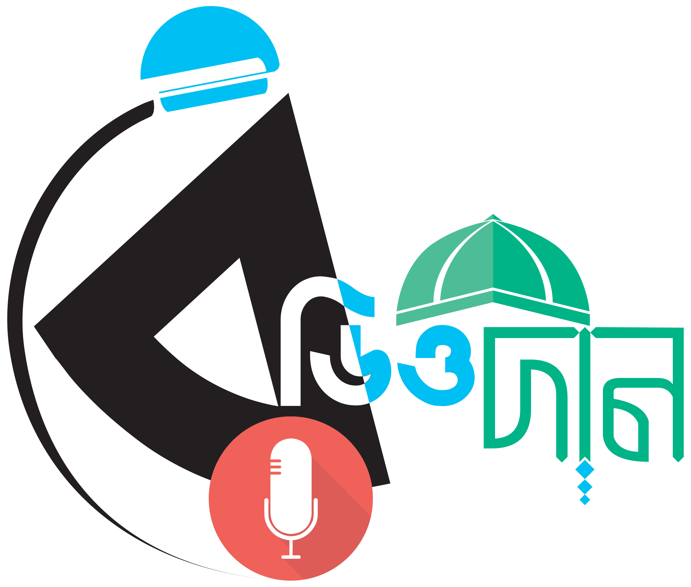

রেডিও দীন
এখন বাজছে:
কোনো ট্র্যাক নির্বাচিত হয়নি
আজকের নামাজের সময়সূচি
মাসিক নামাজের সময়সূচি
মাস নির্বাচন করুন:
জানুয়ারি
ফেব্রুয়ারি
মার্চ
এপ্রিল
মে
জুন
জুলাই
আগস্ট
সেপ্টেম্বর
অক্টোবর
নভেম্বর
ডিসেম্বর
তারিখ নির্বাচন করুন:
সম্পূর্ণ মাস দেখুন